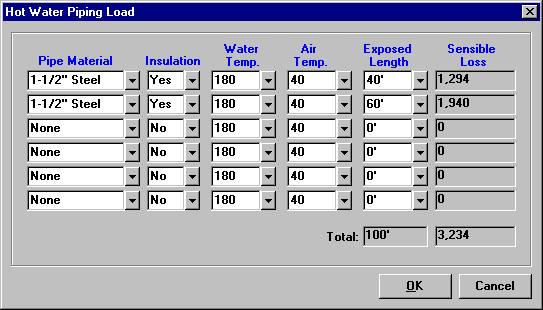

Hot Water Piping Load (System Data Window) |
  
|
Hot Water Piping Load (System Data Window) |
|
Hot Water Piping: Displays the value calculated on the Hot Water Piping Load, shown in the picture below. The hot water piping load is to be used to account for losses in distribution piping for radiant floors, radiators, etc., where the hot water pipes run through an unconditioned space or are exposed to the outside air. The loss through these pipes must be accounted for in determining the required heating capacity of the system.

Pipe Material: Specifies the pipe material and size, which determine the sensible loss of the pipe.
Insulation: Specifies whether or not the pipe has 1-1/2" of insulation rated at R-4 or higher.
Water Temp.: Specifies the temperature of the water in the pipe. The greater the difference between the water temperature and the ambient air temperature, the greater will be the sensible loss for this pipe.
Air Temp.: Specifies the ambient air temperature in the area that the pipe passes through. If the pipe is exposed to the outside air, the ambient air temperature is the same as the outdoor winter dry bulb temperature. If in an enclosed, unconditioned space, it is the temperature of that space.
Exposed Length: Specifies the length of the pipe that is exposed to the unconditioned air. Note that Rhvac will multiply this length by 1.1 to account for fittings.
Sensible Loss: Displays the sensible loss calculated for this pipe section, calculated from the following formula:
Pipe Loss (Btuh) = 1.1 x Lpipe x Fpipe x (Tw - Ta)
Where:
Lpipe = Exposed length of the pipe.
Fpipe = Heat loss factor for the pipe material specified, given in Table 9 of Manual J.
Tw = Temperature of the water inside the pipe.
Ta = Temperature of the ambient air.
OK Button: Applies the changes made and closes this dialog.
Cancel Button: Closes this dialog without making any changes.